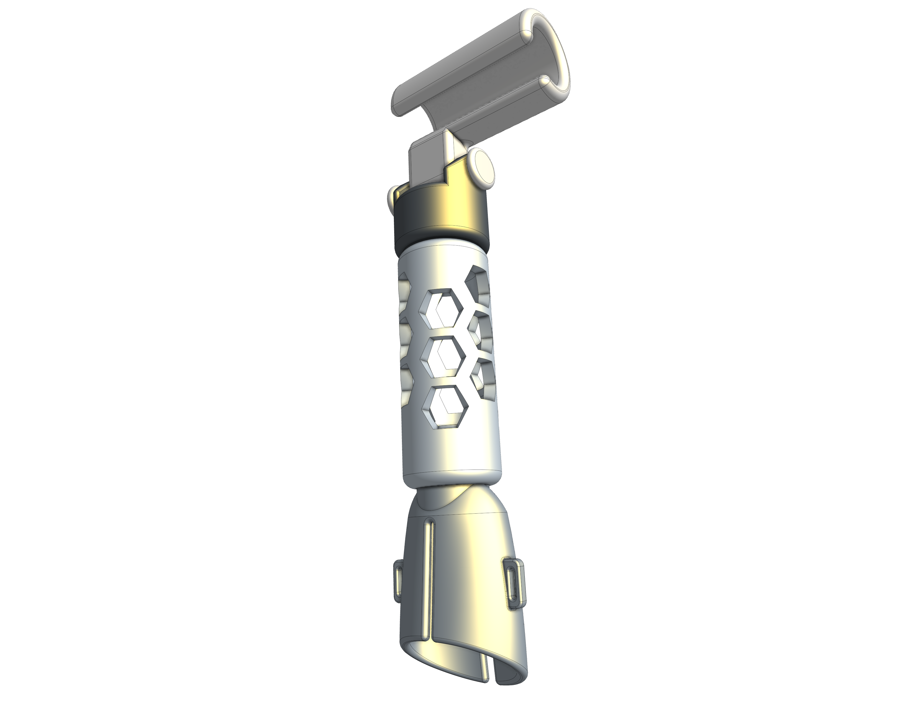

This was a fun one. Designing it gave me in-depth knowledge of Onshape modeling techniques.
The reason I made a prosthetic arm is that I had just visited Form5, a non-profit in Ohio that makes prosthetics for kids. Our robotics team had just made a connection with them for community outreach, and I was curious to learn more.
As a passion project, I designed a modular prosthetic based on one of their most popular products. I made the base able to be velcroed shut, since I didn't have the FDM capabilities to be as precise as Form5. Each stage connects with threads, so when a piece needs to be removed, it can simply be unscrewed by hand.
Although I never made this in real life, I designed it to be as user friendly as possible, shaping the insert for the arm from precise dimensions of my own arm. The final CAD is pictured below.

Credit & Copyright: Processing - Robert Gendler, Roberto Colombari; Data - Hubble Tarantula Treasury, European Southern Observatory